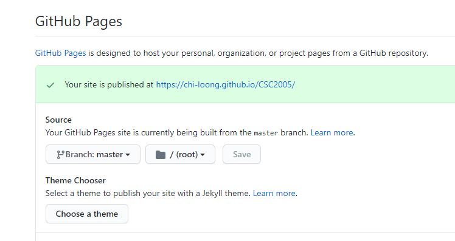

CS2005: Lab 1a
Git Pages / Web dev intro
Objective
Different ways to use Git using a GUI interface.
Publishing your work using GitPages.
Also, a quick intro on web development roadmaps of the future.
GitHub Desktop: Git GUI
The easiest is probably GitHub Desktop.
Document for GitHUb Desktop is excellent, and you can find it here.
The Git functions that you need to know are probably just clone, fork, pull, push and commit.
GitHub desktop makes this easy as it already has a UX wlakthrough designed to guide you in the setup (with Git).
I'll do a quick walkthrough on how to setup a repo from scratch and commit a change.
Git GUI: Alternatives
I also like Sourcetree, which is another free Git GUI client.
It has some useful functions, notably a graph view of the repo changes.

There are other Git GUIs like TortoiseGit, etc. What client or even command line is up to you. But no excuse in not knowing how to work with Git repos.
GitPages
Under the settings tab in your repo, turn on GitHub Pages.
You need to have an index.html file in your main repo page.
Read up on the docs.
Web dev roadmap 2020
Here's a really high-level overview of what CSC2005 labs are trying to cover in 6 sessions.
Web Dev 2020 - a complete roadmap (A more biased opinion)
Questions?
Chi-Loong | V/R